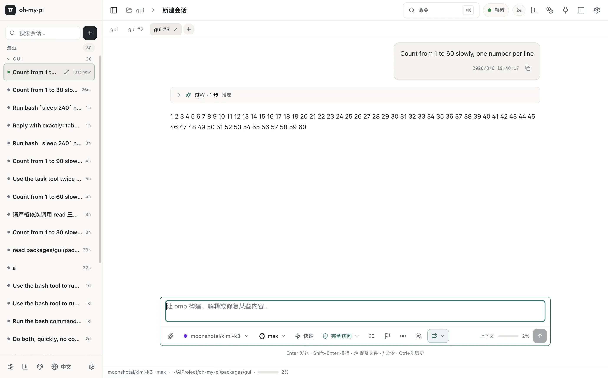
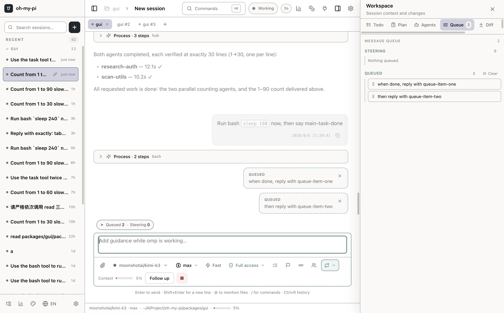
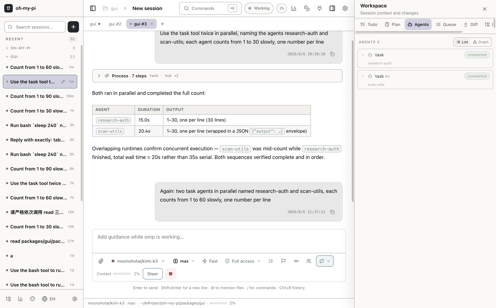
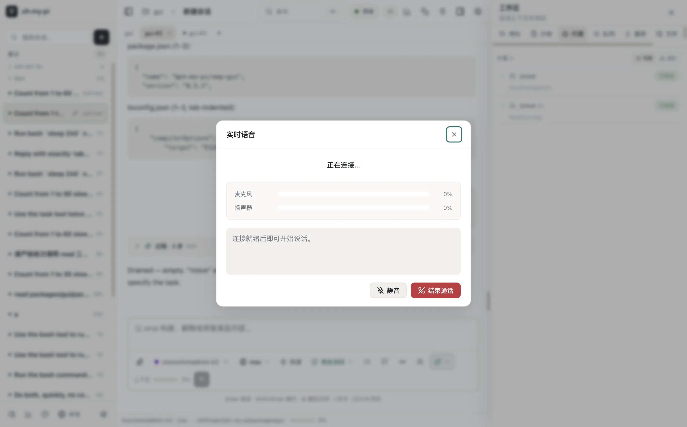
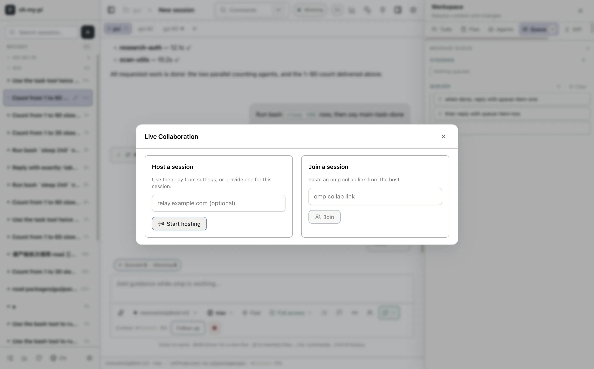
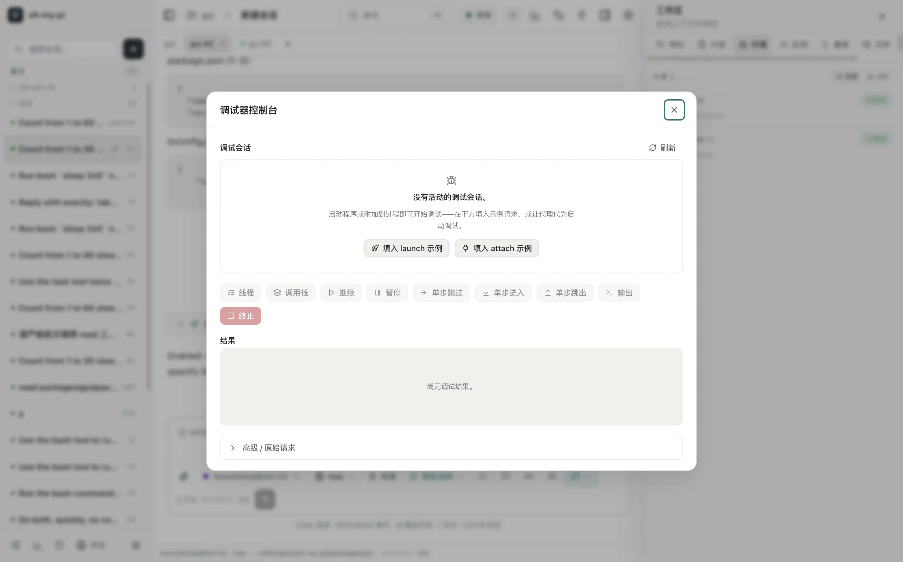
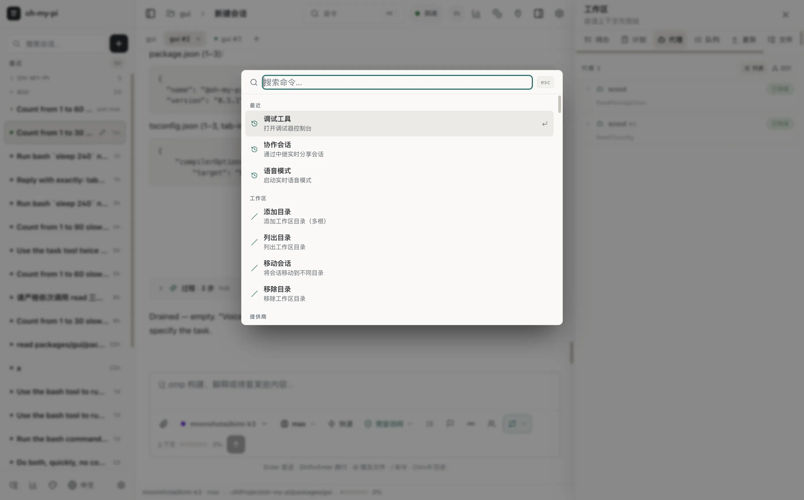
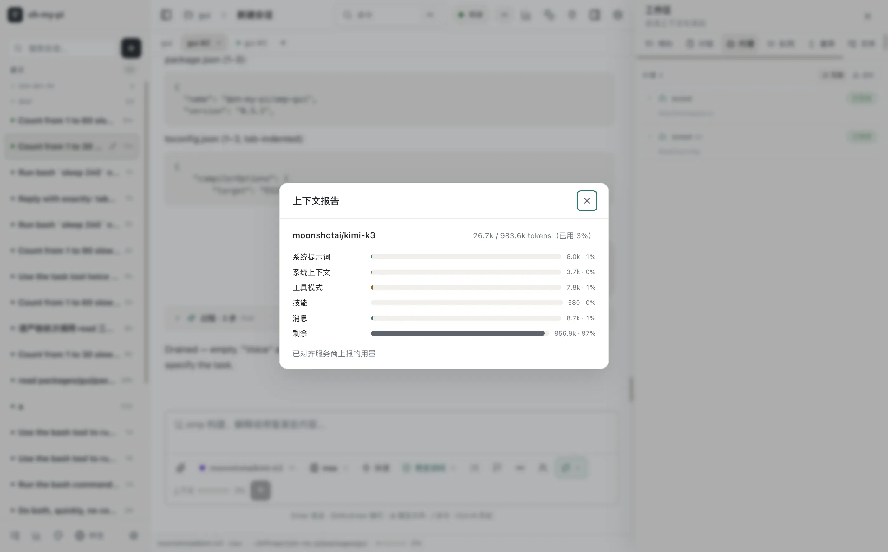

omp 编码 agent 的桌面 GUI。每个会话 Tab 都有独立的 agent 进程——任务在后台自主推进,你只管切换。TUI 的全部能力,原生的桌面体验。
免安装 agent / bun / Node——应用自带 sidecar 二进制 · 全部版本 · 从源码构建

Session Tabs
会话、回合、队列、子代理完全隔离——和 Claude Code / Codex 一样的单程序多会话模型。
切走不暂停:绿点表示仍在运行,完成时亮起徽章,回来接着看结果。
转录、待办、子代理、队列、模型状态、输入草稿按 Tab 快照恢复,事件监听原子迁移。
同一会话在任何入口重复打开都会被重定向到持有它的 Tab——永远不会出现两个进程盲写同一份转录。
Activity Dock
队列不再是一行计数:双泳道面板支持拖拽与按钮排序、单项删除、分泳道清空;子代理按任务命名,状态、时长、模型、消息一目了然;计划/目标/循环模式在 composer 和底栏常驻可见。

队列面板:排序 / 删除 / 清空,活动条与待发送气泡实时联动

子代理按任务命名,不再是清一色的 "task"——可查看消息、中止、复活
Native Surfaces
不是把终端命令包一层壳——每个功能都是原生界面,背后是 50+ 个专用 RPC 命令打通 agent 运行时。

原生语音会话:状态、麦克风电平、实时转写、静音与挂断。

主持或加入协作会话:可编辑/只读链接、参与者列表、浏览器直达。

完整 DAP 调试:会话列表、线程/调用栈/单步/输出,结构化结果而不是手写 JSON。

159 个命令全部本地化,⌘K 唤起,中文搜索直达一切功能。
Context & Control
上下文报告按类别拆分 token 占用;压缩、清理、手动/自动重试都有明确的结果反馈。Mermaid、KaTeX、代码行号、GFM 任务列表、read 分组折叠——渲染保真度与 TUI 对齐。
GUI 与 agent 运行时之间是类型化的 NDJSON RPC 桥:队列管理、上下文报告、工具清单、分享、任务……每一个都是结构化的。
GUI 启动自动合并 login-shell 环境:MCP 服务器、shell 导出的 API key、代理设置,在 Finder 启动的应用里一样工作。

Auto Update
应用启动与每四小时检查 GitHub Releases。看到横幅,点两下,重启即新版——增量块下载,不占满带宽。
横幅提示"新版本 x.y.z 已发布",可按版本忽略;设置页随时手动检查。
点击下载,blockmap 增量只拉差异块,实时进度;下载在后台完成,不打断工作。
"重启安装"一键完成替换。更新服务器就是 GitHub Releases,零额外运维。
Install
macOS 13+,Apple Silicon 或 Intel。拖入 /Applications 即可——agent、运行时、原生插件全部内置。
xattr -dr com.apple.quarantine /Applications/omp.app。签名与公证在路上。# 1. monorepo(fork,含 GUI 使能改动) git clone https://github.com/nornzach/oh-my-pi.git omp-monorepo cd omp-monorepo && bun install && cd .. # 2. GUI 仓库,嵌套到 packages/gui cd omp-monorepo/packages git clone https://github.com/nornzach/oh-my-pi-gui.git gui cd gui && bun install # 3. 编译 sidecar 并打包 bun run build:omp bun run package:mac:arm64